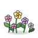

Monsters & Canons / Cántaro / T539
Vegetación de otro mundo.
Presencia tranquila.
Tres direcciones originales para una futura familia que reemplace dibujo:flores en los niveles 1, 3, 4 y 5. Compartimos técnica y paleta para comparar primero la forma.
Muestras de concepto pendientes de elección de Lucas. Son composiciones de revisión, no capturas del juego. Ninguna variante está aprobada ni integrada.
01 / Forma y lectura
Lienzos SVG de 64 × 64 mostrados a 220 px y a 34 px CSS. El zoom del navegador y la pantalla pueden alterar el tamaño físico. Un reflejo principal, volumen suave y contorno de mapa.
Dirección A / sin aprobar
Láminas espiraladas
34 px
Una corola carnosa se enrolla en tres láminas anulares desiguales. Tallo corto y dos hojas anchas; el hueco abierto rompe la forma de flor terrestre.
Revisar si la espiral se reconoce a 34 px sin parecer un emblema.
Abrir fuente SVG ADirección B / sin aprobar
Cápsulas asimétricas
34 px
Tres cápsulas de distinto tamaño forman un hongo-flor bajo. La cápsula principal se pliega sobre su vientre; las hojas atan el conjunto al suelo.
Revisar si se lee como vegetación extraña y no como hongos comunes o recurso.
Abrir fuente SVG BDirección C / sin aprobar
Roseta estrellada
34 px
Seis hojas curvas y desiguales arman una estrella baja. Una pequeña flor plegada ocupa el centro, sin simetría radial de margarita.
Revisar si el centro sobrevive a 34 px y si las hojas resultan suficientemente alienígenas.
Abrir fuente SVG C02 / Una familia para los cuatro niveles
Los cuatro niveles declaran tema: pradera. El mismo fondo oliva moteado aproxima ese suelo: no es la textura original ni reproduce ubicación, densidad o casillas reales. Cada grupo repite una variante a 34 px para comparar su ritmo visual, sin asignar especies distintas por nivel.
Paleta compartida provisional: salvia gris, malva empolvado y arcilla rosada. Sin emisión de luz. ¿Preferís sostener una sola paleta en los cuatro niveles o explorar un matiz local discreto después de elegir la silueta?
03 / Punto de partida y límites

Referencia histórica sin modificarSe conserva únicamente para comparar la escala del motivo y su técnica. Las tres propuestas se dibujaron desde cero.
Abrir copia original La luz superior izquierda y el apoyo discreto toman como referencia la decoración dimensional y M79. Estos SVG simplifican ese volumen para explorar formas; Lucas todavía debe revisar la convivencia con los PNG pintados y el atlas de Cántaro. No se declara equivalencia de técnica ni arte final.
Falta elegir dirección, material y color, revisar contraste en contexto y acordar densidad y escala de integración. Una futura validación en Godot 4.7.2 requiere autorización para integrar, capturas reales y aprobación de Lucas.